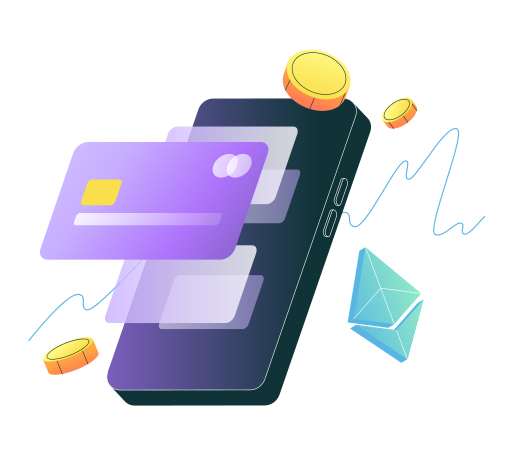

01
Spring
Drag the puck and let go. Tune the spring.
Every hover and panel on my sites moves on a spring, not a duration. Softer springs read as friendly, stiffer ones as precise. This is the dial I keep reaching for.
Nairobi · --:--
I’m a product engineer working where backend systems and design systems meet. Currently building the property platform at Tajji: two apps, a web console, and the kit underneath. Previously Emmerce.
Tap “Record payment” and follow it to the ledger.
Commission a portfolio: agreement, plan, payment.
Drag the gold handle to pay rent.
Engineered trust for Africa’s urban century
Move over the cover.
Africa’s urban century runs on engineered trust.

Revamped in 2025.
$ A mobile side project, early days.
Drag the puck and let go. Tune the spring.
Every hover and panel on my sites moves on a spring, not a duration. Softer springs read as friendly, stiffer ones as precise. This is the dial I keep reaching for.
Change a token and everything downstream follows.
Sceptre, Tajji’s design system, is built this way: a handful of tokens, and components that only ever reference them. Re-theming a whole app is a diff of a few lines.
Bill a tenant, take a payment, watch the books balance.
| Account | Dr | Cr |
|---|
Money in a property platform is a ledger first and a screen second. Every rent payment in BomaOS lands as balanced double-entry lines before it ever shows up as a number.
Overview
BomaOS is Tajji’s app for landlords and property managers, with Jirani as its tenant-side counterpart and the BomaOS Console on the web. I work across all three: the product design, the Kotlin Multiplatform apps, the backend, and Sceptre, the design system underneath.
The challenge
A lease is signed, a tenant pays by M-Pesa, someone else pays by bank transfer, a third pays late. Each one needs recording, matching and explaining, and the person doing it is usually also fixing the plumbing.
Knows every unit by heart.
But not today’s balance without opening three apps and a notebook.
Pays on time.
But has nothing official to point to when someone asks for proof.
People
Each person gets the surface that fits how they work, and all three read and write the same records.
System
Both apps live in one Kotlin Multiplatform build and use the same libraries as project dependencies, so a library change reaches BomaOS and Jirani in the same commit.
Decisions
Money
Every rent payment posts as balanced double-entry lines before it appears as a number on anyone’s phone. That’s what lets a landlord, a tenant and an operator see the same truth.
Try it: the Ledger toy in the Playground bills a tenant and takes a payment, live.
Outcome
BomaOS v1.0 shipped on Google Play in 2025. Jirani and the BomaOS Console followed in 2026, on the same shared foundation.
Whoami?
I’m Victor, a product engineer in Nairobi. I work where backend systems and design systems meet, turning how a product should feel into systems that keep it that way at scale.
I like the mechanical parts to have feeling. Interaction should be enjoyable and fun without compromising performance or efficiency.
Experience
Education
Tools ↘